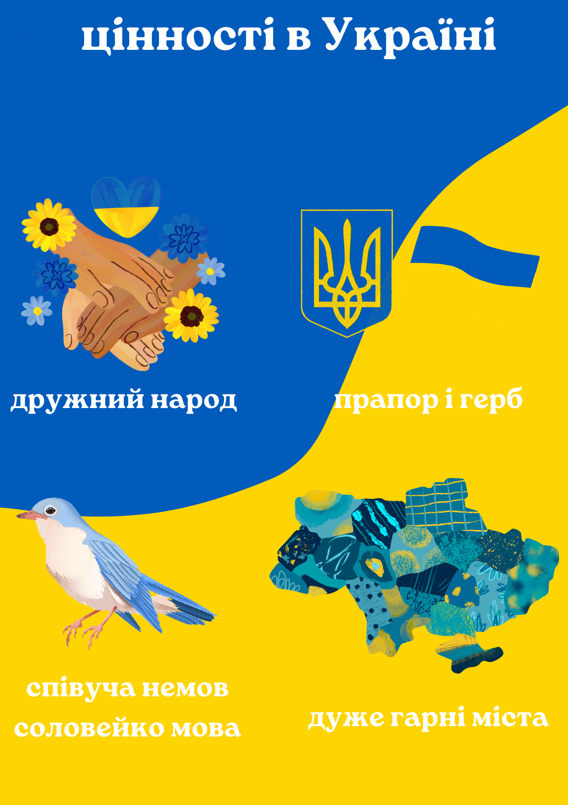

Україна для мене це місце, де розмовляють українською мовою, де знаходиться мій дім, моя Батьківщина, мої друзі та родичі. Там живуть добрі та гарні люди, Україна це десь цінують звичаї та традиції. Я звичайно не патріот, але люблю свій будинок, місце де я жила, людей які були зі мною до моменту, коли довелося поїхати.
Український народ це для мене знайомі та бабусі на базарі, ще добрі продавщиці, які пропускають без масок, або які прощають 25 копійок. Деякі люди у парках та підземках дуже гарно грають на музичних інструментах, у деяких просто гарний український акцент.
"Об'єднуючими факторами для побудови нової сильної України мають стати цінності. Цінності - це найголовніше, вони об'єднають нас заради спільного майбутнього: цінності свободи, цінності демократії, цінності громадянського суспільства та правової держави, цінності гідного життя, добра, толерантності, порядності, поваги до закону, у приватній власності та найголовніша цінність, яку ми втрачаємо, - це повага один до одного", - сказав Зеленський.
як сказав Зеленський – Вчора ми втратили, на жаль, нашу «Мрію». Але стару «Мрію». А нову ми зараз будуємо.